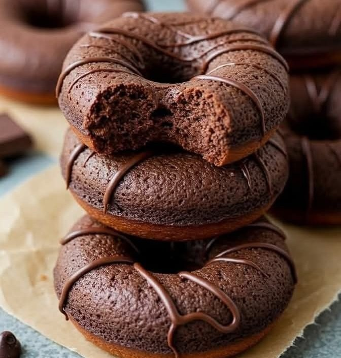

Donuts 🍩

Ingredients:
- 3 cups all-purpose flour
- 1 cup warm milk
- 2¼ tsp active dry yeast
- ¼ cup sugar
- ¼ cup melted butter
- 1 egg
- ½ tsp salt
- Oil for frying
- Optional: chocolate glaze, powdered sugar, sprinkles
Preparation👨🍳:
- Activate yeast: Mix warm milk, sugar, and yeast. Let it sit 5-10 minutes until foamy.
- Make dough: Add egg, melted butter,
and salt to yeast mix. Gradually add flour and knead until smooth and soft (about 10 minutes).
- Let it rise: Cover and let it rise in a warm place for 1 hour or until doubled.
- Shape: Roll out the dough to 1 cm thickness. Use a round cutter (and smaller one for center hole). Let rest 15 minutes.
- Fry: Heat oil in a deep pan. Fry donuts until golden on both sides. Drain on paper towels.
- Decorate: Dip in melted chocolate or glaze, add sprinkles or powdered sugar.